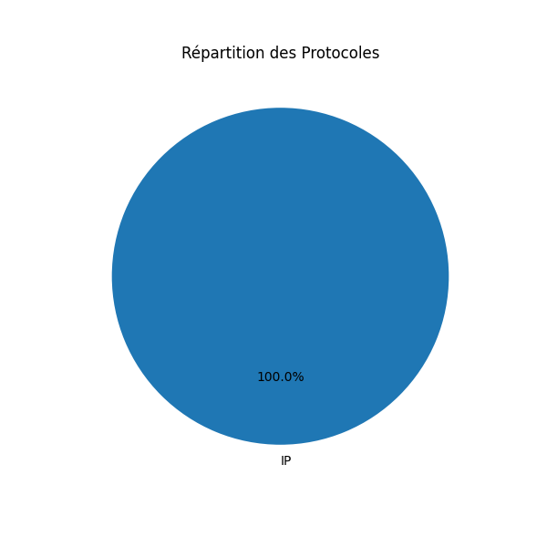
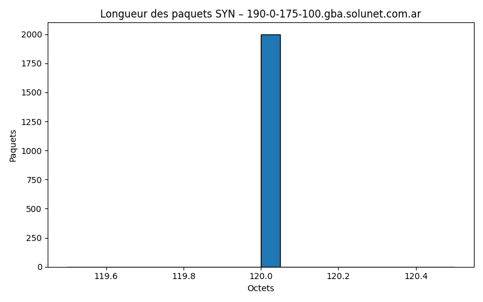
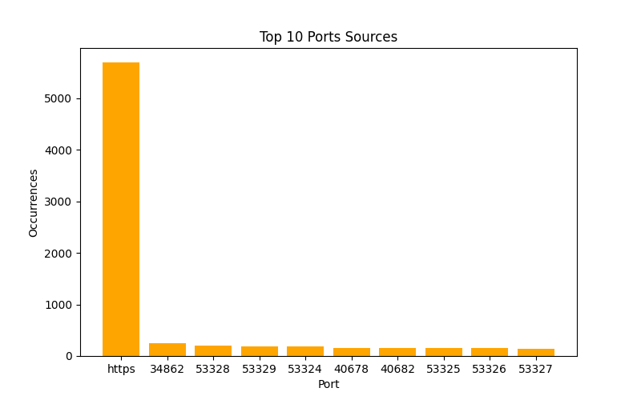
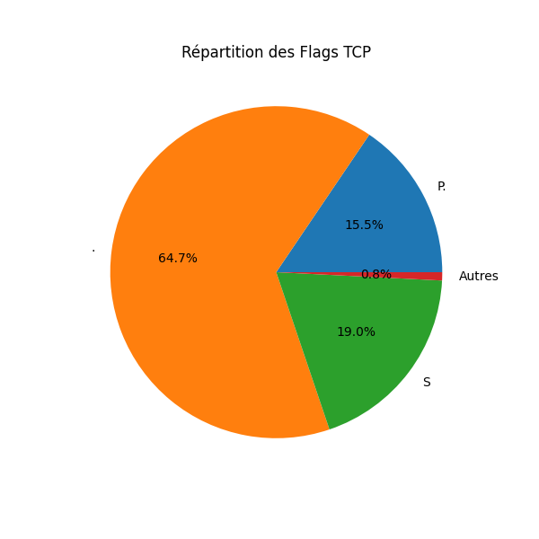
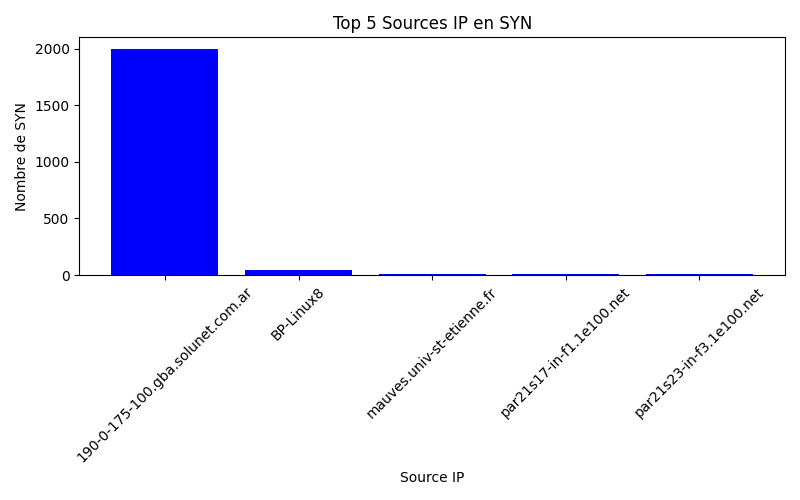
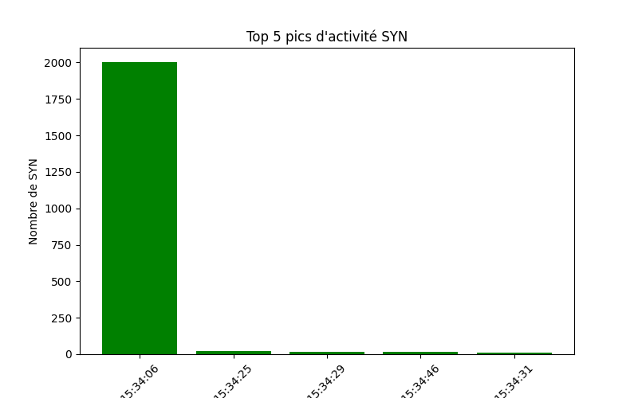
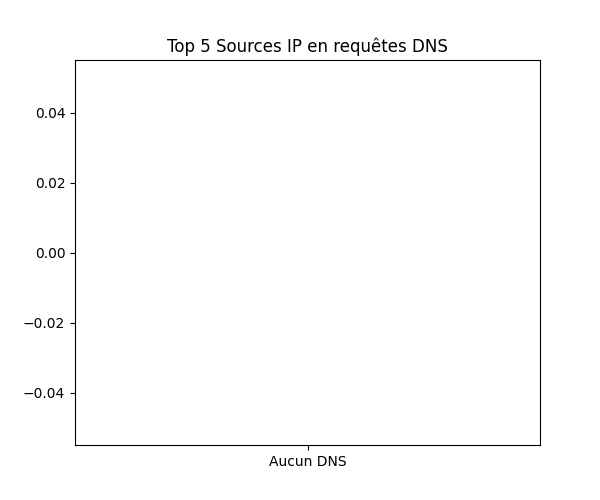
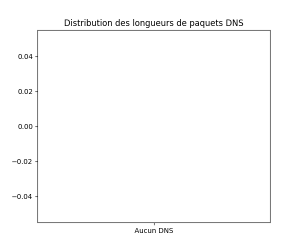
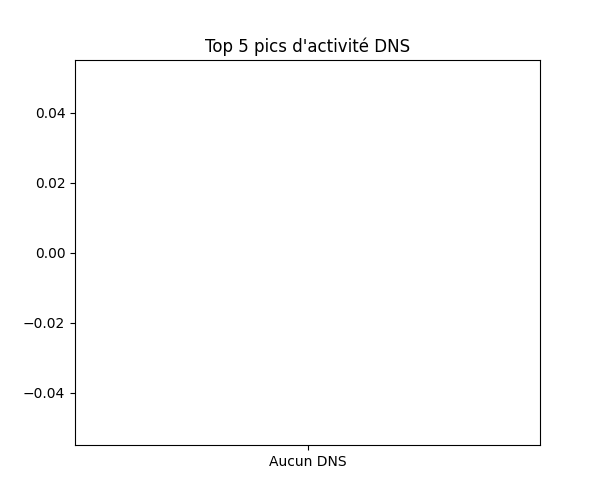

Analyse Tcpdump
Répartition des Protocoles

Distribution des longueurs de paquets

Top 10 Ports Sources

Flags SYN vs autres

Flags SYN par Source IP

Évolution des Flags SYN dans le temps

Top 5 Sources IP en requêtes DNS

Distribution des longueurs de paquets DNS

Top 5 pics d'activité DNS
